We will be examining the difference in Tweet communications between TikTok and Facebook. These are two popular social media platforms in a similar industry but with very different target audiences, thus the two brands and their audiences could differ in their communication styles and language.
Loading packages.
library(rtweet)
library(tidyverse)
library(lubridate)
library(scales)
library(tidytext)
library(wordcloud)
library(textdata)
library(caret) # for general model fitting
library(rpart) # for fitting decision trees
library(rpart.plot)
library(ipred) # for fitting bagged decision trees
library(ranger)
library(gbm)
library(vip)Getting tweets
# Run these two lines to get the tweets
# and then save them as a csv for future use
# tiktok <- get_timeline("tiktok_us", n=3200)
# tiktok %>% write_as_csv('tiktok.csv')
#
# facebook <- get_timeline("Facebook", n=3200)
# facebook %>% write_as_csv("facebook.csv")
tiktok <-
read_csv('tiktok.csv') %>%
select(status_id, source, text, created_at)
facebook <-
read_csv('facebook.csv') %>%
select(status_id, source, text, created_at)
nrc <- read_rds("nrc.rds")
facebook %>% head()## # A tibble: 6 x 4
## status_id source text created_at
## <chr> <chr> <chr> <dttm>
## 1 x1382020080343~ Twitter We~ "Ramadan Mubarak <U+0001F319>\r\n \r\nThis #MonthofGood, ~ 2021-04-13 17:17:18
## 2 x1381734429018~ Khoros CX "@MeenalK1 Hi Meenal. Do you have the reference numbers f~ 2021-04-12 22:22:13
## 3 x1381733382632~ Khoros CX "@Afrojalipro Thanks for updating us, Afroj! We're so hap~ 2021-04-12 22:18:04
## 4 x1381732668388~ Khoros CX "@CallandManning Hi Calland. If you do not have access to~ 2021-04-12 22:15:14
## 5 x1381711376876~ Khoros CX "@BHARTINANDAN4 Hello! Please visit this Help Center arti~ 2021-04-12 20:50:37
## 6 x1381710548476~ Khoros CX "@weathermatt22 Hi Matt. Please visit our Help Center to ~ 2021-04-12 20:47:20facebook %>%
count(source, hour = hour(with_tz(created_at, "EST"))) %>%
mutate(percent = n/sum(n)) %>%
ggplot(aes(x = hour, y = percent, color = source)) +
labs(x = "Hour of day (EST)", y = "% of tweets", color = "") +
scale_y_continuous(labels = percent_format()) +
geom_line() +
ggtitle('Facebook Source Breakdown by Hour')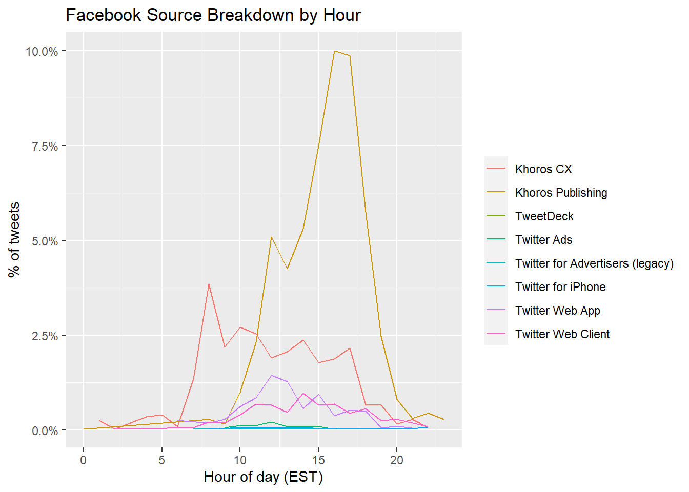
tiktok %>%
count(source, hour = hour(with_tz(created_at, "EST"))) %>%
mutate(percent = n/sum(n)) %>%
ggplot(aes(x = hour, y = percent, color = source)) +
labs(x = "Hour of day (EST)", y = "% of tweets", color = "") +
scale_y_continuous(labels = percent_format()) +
geom_line() +
ggtitle('Tiktok Source Breakdown by Hour')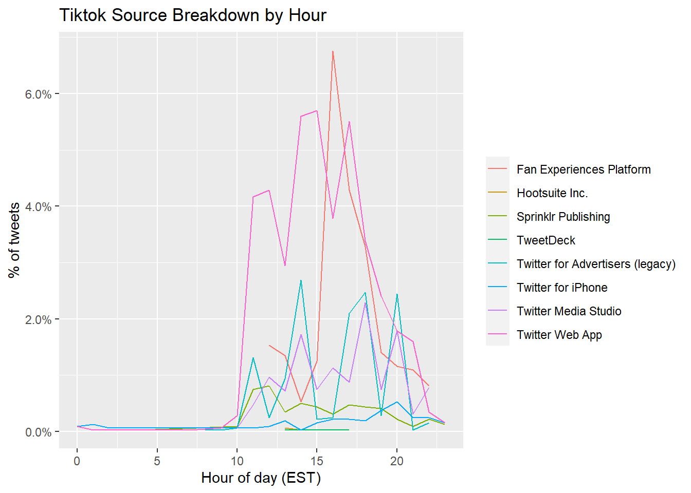
fb_wordcounts <-
facebook %>%
mutate(tweetLength = str_length(text)) %>%
filter(tweetLength < 500)
tiktok_wordcounts <-
tiktok %>%
mutate(tweetLength = str_length(text)) %>%
filter(tweetLength < 500)
writeLines(c(paste0("Facebook Mean Tweet Length: ",
mean(fb_wordcounts$tweetLength)),
paste0("TikTok Mean Tweet Length: ",
mean(tiktok_wordcounts$tweetLength))))## Facebook Mean Tweet Length: 163.370231394622
## TikTok Mean Tweet Length: 112.916405760801hist(tiktok_wordcounts$tweetLength)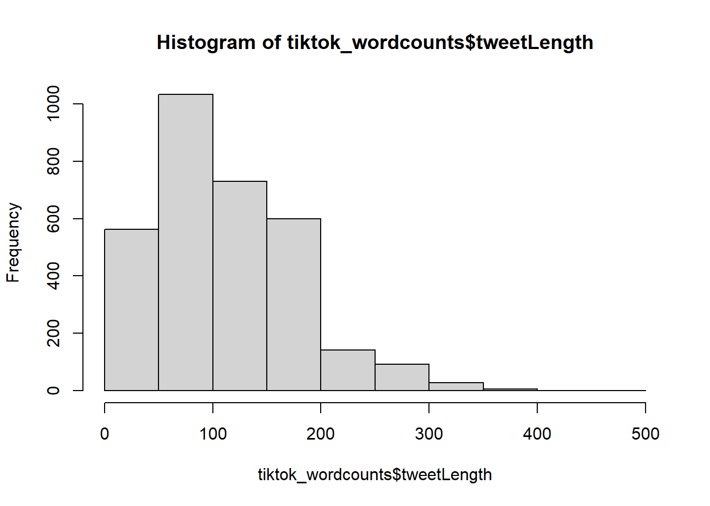
hist(fb_wordcounts$tweetLength)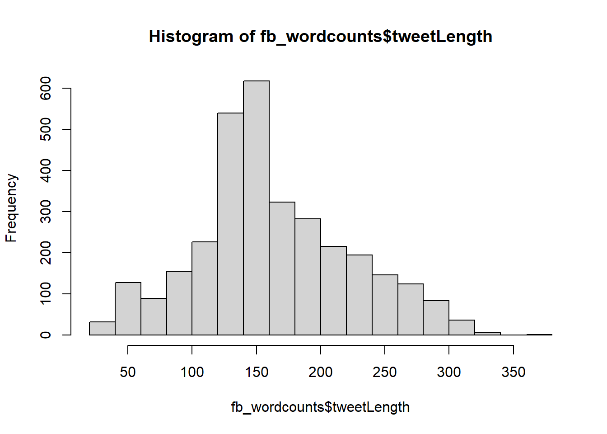
fb_picture_counts <-
facebook %>%
filter(!str_detect(text, '^"')) %>%
count(picture = ifelse(str_detect(text, "t.co"),
"Picture/link", "No picture/link"))
tiktok_picture_counts <-
tiktok %>%
filter(!str_detect(text, '^"')) %>%
count(picture = ifelse(str_detect(text, "t.co"),
"Picture/link", "No picture/link"))
barplot(fb_picture_counts$n,
names.arg=c("No picture/link", "Picture/link"),
main = "Facebook # of Tweets with and without pics/link")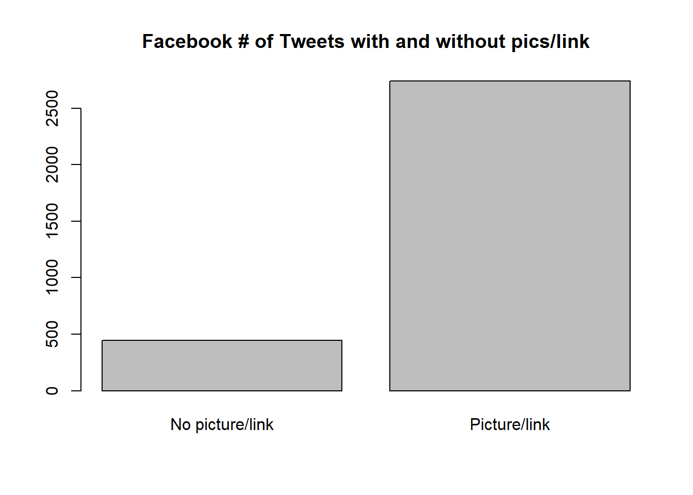
barplot(tiktok_picture_counts$n,
names.arg=c("No picture/link", "Picture/link"),
main = "Tiktok # of Tweets with and without pics/link")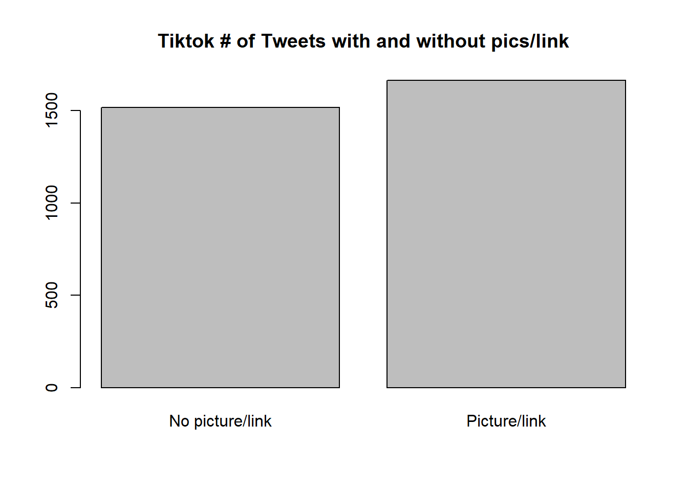
reg <- "([^A-Za-z\\d#@']|'(?![A-Za-z\\d#@]))"
# Unnest the text strings into a data frame of words
fb_words <-
facebook %>%
filter(!str_detect(text, '^"')) %>%
mutate(text = str_replace_all(text,
"https://t.co/[A-Za-z\\d]+|&",
"")) %>%
unnest_tokens(word, text,
token = "regex",
pattern = reg) %>%
filter(!word %in% stop_words$word,
str_detect(word, "[a-z]"))
tiktok_words <-
tiktok %>%
filter(!str_detect(text, '^"')) %>%
mutate(text = str_replace_all(text,
"https://t.co/[A-Za-z\\d]+|&",
"")) %>%
unnest_tokens(word, text,
token = "regex",
pattern = reg) %>%
filter(!word %in% stop_words$word,
str_detect(word, "[a-z]"))
# Inspect the first six rows of tweet_words
head(fb_words)## # A tibble: 6 x 4
## status_id source created_at word
## <chr> <chr> <dttm> <chr>
## 1 x1382020080343470082 Twitter Web App 2021-04-13 17:17:18 ramadan
## 2 x1382020080343470082 Twitter Web App 2021-04-13 17:17:18 mubarak
## 3 x1382020080343470082 Twitter Web App 2021-04-13 17:17:18 0001f319
## 4 x1382020080343470082 Twitter Web App 2021-04-13 17:17:18 #monthofgood
## 5 x1382020080343470082 Twitter Web App 2021-04-13 17:17:18 check
## 6 x1382020080343470082 Twitter Web App 2021-04-13 17:17:18 kindnessfb_words %>%
count(word, sort = TRUE) %>%
head(20) %>%
mutate(word = reorder(word, n)) %>%
ggplot(aes(x = word, y = n)) +
geom_bar(stat = "identity") +
ylab("Occurrences") +
coord_flip()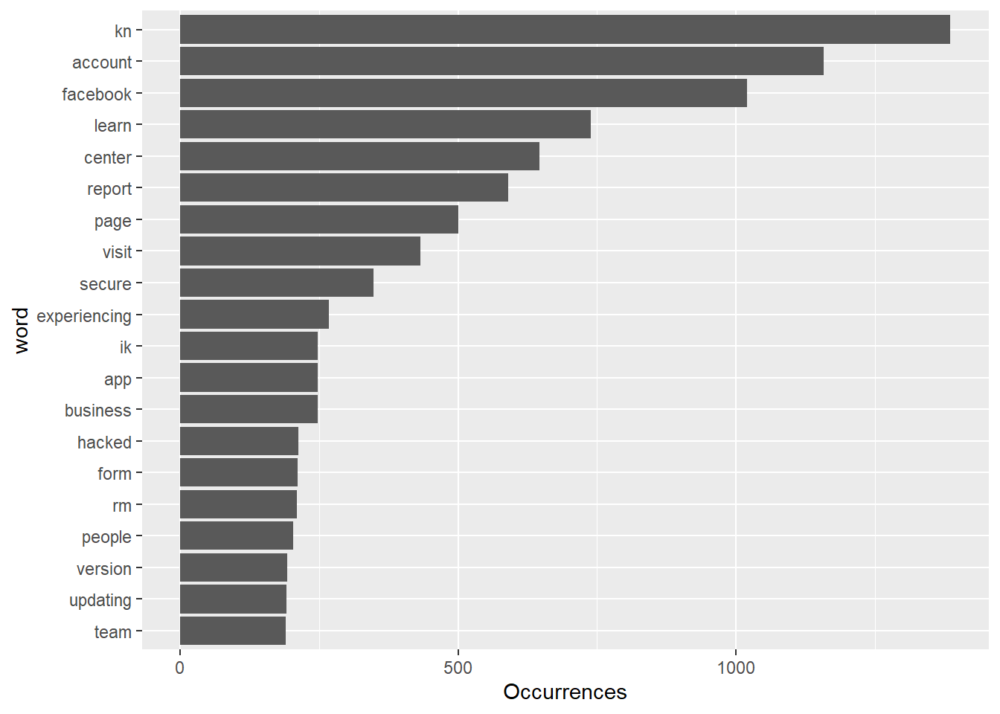
tiktok_words %>%
count(word, sort = TRUE) %>%
head(20) %>%
mutate(word = reorder(word, n)) %>%
ggplot(aes(x = word, y = n)) +
geom_bar(stat = "identity") +
ylab("Occurrences") +
coord_flip()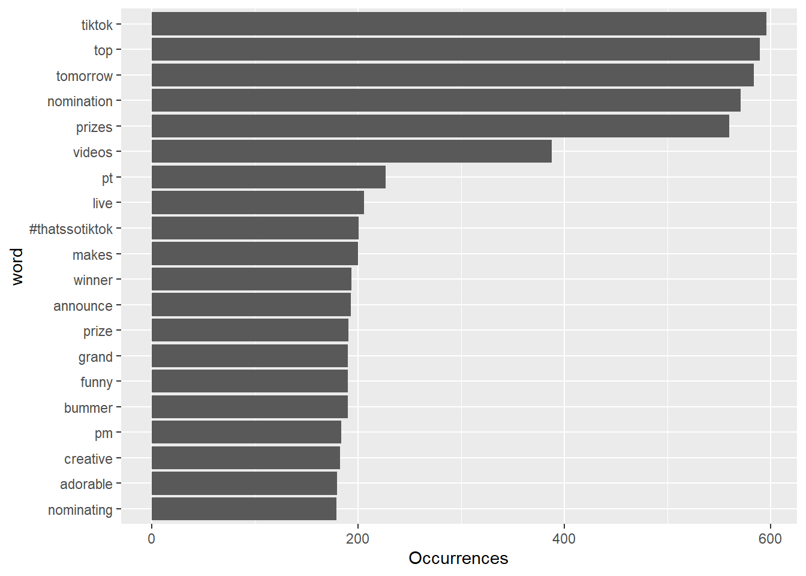
fb_sentiment <-
inner_join(fb_words, nrc, by = "word") %>%
group_by(sentiment)
tiktok_sentiment <-
inner_join(tiktok_words, nrc, by = "word") %>%
group_by(sentiment)
fb_words %>% head()## # A tibble: 6 x 4
## status_id source created_at word
## <chr> <chr> <dttm> <chr>
## 1 x1382020080343470082 Twitter Web App 2021-04-13 17:17:18 ramadan
## 2 x1382020080343470082 Twitter Web App 2021-04-13 17:17:18 mubarak
## 3 x1382020080343470082 Twitter Web App 2021-04-13 17:17:18 0001f319
## 4 x1382020080343470082 Twitter Web App 2021-04-13 17:17:18 #monthofgood
## 5 x1382020080343470082 Twitter Web App 2021-04-13 17:17:18 check
## 6 x1382020080343470082 Twitter Web App 2021-04-13 17:17:18 kindnessHere we compare the sentiment between Facebook and TikTok. It looks like discussions surrounding Facebook uses more trust words while topics about TikTok uses more words that reflect anticipation.
fb_sentiment_analysis <- fb_sentiment %>%
count(word, sentiment) %>%
group_by(sentiment)
fb_sentiment_analysis %>%
top_n(15) %>%
ggplot(aes(x = sentiment, y = n )) +
geom_bar(stat = "identity") +
coord_flip() +
ylab("Frequency") +
xlab("Sentiment") +
labs(title="Facebook Sentiment")## Selecting by n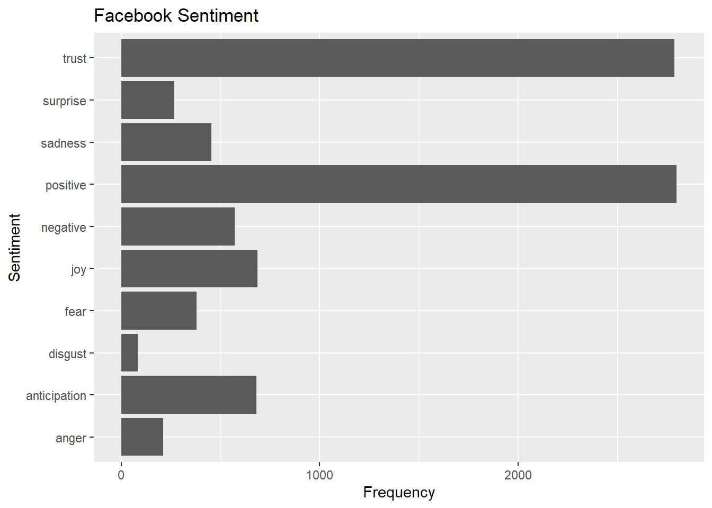
tiktok_sentiment_analysis <- tiktok_sentiment %>%
count(word, sentiment) %>%
group_by(sentiment)
tiktok_sentiment_analysis %>%
top_n(15) %>%
ggplot(aes(x = sentiment, y = n )) +
geom_bar(stat = "identity") +
coord_flip() +
ylab("Frequency") +
xlab("Sentiment") +
labs(title="TikTok Sentiment")## Selecting by n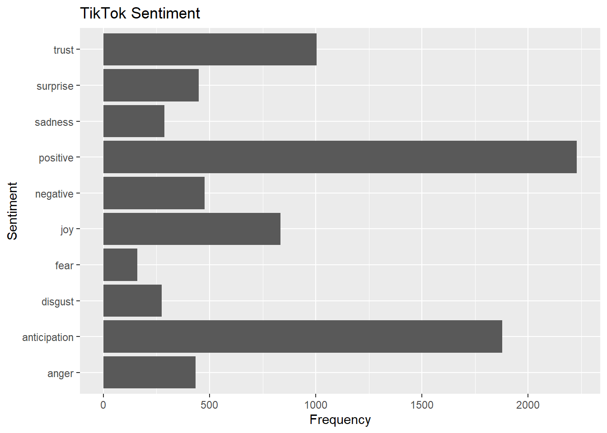
fb_sentiment_analysis %>% filter(!sentiment %in% c("positive", "negative")) %>%
mutate(sentiment = reorder(sentiment, -n),
word = reorder(word, -n)) %>% top_n(10) -> fb_sentiment_analysis2## Selecting by nggplot(fb_sentiment_analysis2, aes(x=word, y=n, fill = n)) +
facet_wrap(~ sentiment, scales = "free")+
geom_bar(stat ="identity") +
theme(axis.text.x = element_text(angle = 90, hjust = 1)) +
labs(y="count", title="Facebook Sentiment")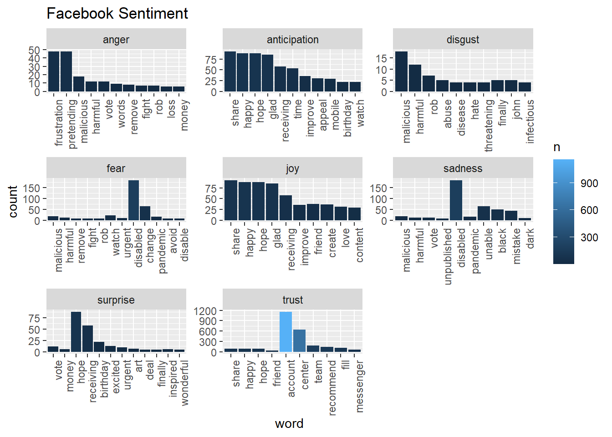
tiktok_sentiment_analysis %>% filter(!sentiment %in% c("positive", "negative")) %>%
mutate(sentiment = reorder(sentiment, -n),
word = reorder(word, -n)) %>% top_n(10) -> tiktok_sentiment_analysis2## Selecting by nggplot(tiktok_sentiment_analysis2, aes(x=word, y=n, fill = n)) +
facet_wrap(~ sentiment, scales = "free")+
geom_bar(stat ="identity") +
theme(axis.text.x = element_text(angle = 90, hjust = 1)) +
labs(y="count", title="Tik Tok Sentiment")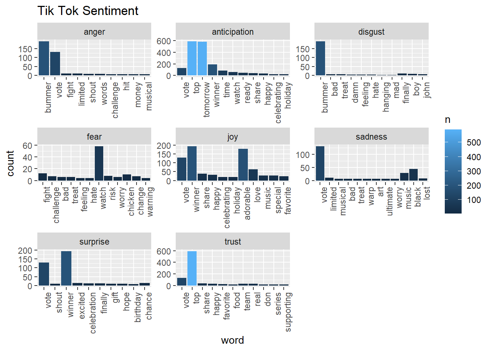
We also want to visualize common words on Facebook and Tiktok by wordccloud. The visual depiction indicates to us that “learn”, “center” and “report” are common words, with more secondary common words such as “secure” page“, and”visit" for Facebook account engagement. This could be that Facebook users tweet about account issues. Whereas, TikTok has “top”, “tomorrow”, and “prizes” as common words, and more secondary common words such as “winner,”nominating“, and”grand", indicating that the social media platform likes to promote competitions or giveaways, which makes sense given their younger demographics might enjoy these types of rewards and games.
facebook_cloud <- fb_words %>% count(word) %>% arrange(-n)
wordcloud(facebook_cloud$word, facebook_cloud$n, max.words = 200, colors = c("#00B2FF", "red", "#FF0099", "#6600CC", "green", "orange", "blue", "brown"))tiktok_cloud <- tiktok_words %>% count(word) %>% arrange(-n)
wordcloud(tiktok_cloud$word, tiktok_cloud$n, max.words = 200, colors = c("#00B2FF", "red", "#FF0099", "#6600CC", "green", "orange", "blue", "brown"))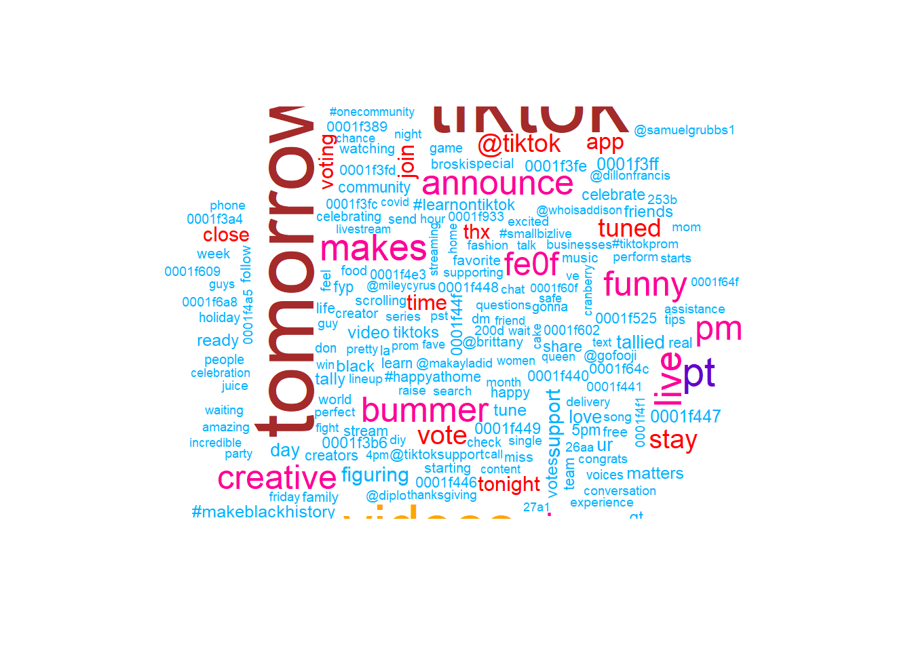
Next, we examine texts on Facebook and Tiktok to see their positive-negative score by using afinn lexicon
# run this to get afinn lexicon and save it as a csv
#afinn %>% write_as_csv("afinn.csv")
afinn <- read_csv('afinn.csv')fb_afinn <-
inner_join(fb_words, afinn, by = "word")
tiktok_afinn <-
inner_join(tiktok_words, afinn, by = "word")
fb_afinn %>% summarise(mean_fb_afinn = mean(value))## # A tibble: 1 x 1
## mean_fb_afinn
## <dbl>
## 1 0.785tiktok_afinn %>% summarise(mean_tt_afinn = mean(value))## # A tibble: 1 x 1
## mean_tt_afinn
## <dbl>
## 1 1.70Mean of Facebook’s afinn value is 0.79 while mean of Tiktok’s afinn value is 1.704293. In general, tweets from Tiktok are more positive than those on Facebook.
Here, we predict the user based on the tweet length and number of words for each sentiment. TikTok is encoded as 1, and Facebook is encoded as 0.
fb_sentiment_counts <-
fb_sentiment %>%
group_by(status_id) %>%
count(sentiment) %>%
pivot_wider(id_cols = status_id,
names_from = sentiment,
values_from = n,
values_fill = 0)
tiktok_sentiment_counts <-
tiktok_sentiment %>%
group_by(status_id) %>%
count(sentiment) %>%
pivot_wider(id_cols = status_id,
names_from = sentiment,
values_from = n,
values_fill = 0)
tiktok_feature_selection <-
tiktok_wordcounts %>%
mutate(user = 1) %>%
left_join(tiktok_sentiment_counts,
by="status_id")
facebook_feature_selection <-
fb_wordcounts %>%
mutate(user = 0) %>%
left_join(fb_sentiment_counts,
by="status_id")
both_users <-
tiktok_feature_selection %>%
rbind(facebook_feature_selection) %>%
mutate_if(is.numeric,coalesce,0)
set.seed(123)
index <-
createDataPartition(both_users$user,
p = 0.8, list = FALSE)
for_decisiontree <-
both_users %>% select(-1,-2,-3,-4)
train <- for_decisiontree[index, ]
test <- for_decisiontree[-index, ]
simple_model <- rpart(user ~ ., data = train, method = "class")
rpart.plot(simple_model, yesno = 2)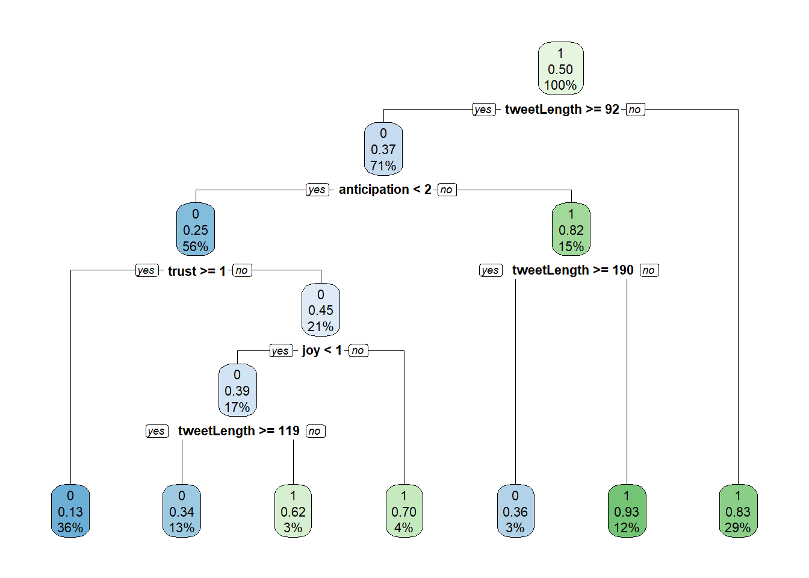
set.seed(123)
bagging_model <- train(
user ~ .,
data = train,
method = "treebag",
trControl = trainControl(method = "oob"),
keepX = T,
nbagg = 100,
importance = "impurity",
control = rpart.control(minsplit = 2, cp = 0)
)
n_features <- length(setdiff(names(train), "user"))
rf_model <- ranger(
user ~ .,
data = train,
mtry = floor(n_features * 0.5),
respect.unordered.factors = "order",
importance = "permutation",
seed = 123
)
set.seed(123) # for reproducibility
gbm_model <- gbm(
formula = user ~ .,
data = train,
distribution = "gaussian", # SSE loss function
n.trees = 1000,
shrinkage = 0.05,
interaction.depth = 5,
n.minobsinnode = 4,
cv.folds = 10
)actual_train <- train$user
simple_pred_train <-
predict(simple_model, newdata = train) %>%
as_tibble() %>%
select(2) %>%
unlist() %>%
as.vector()
rss_simple_train <- sum((actual_train-simple_pred_train)^2)
bagging_pred_train <-
predict(bagging_model, newdata = train) %>%
as.vector()
rss_bagging_train <- sum((actual_train-bagging_pred_train)^2)
rf_pred_train <- predict(rf_model, data = train, seed = 123, verbose = T)[1] %>% unlist()
rss_rf_train <- sum((actual_train-rf_pred_train)^2)
gb_pred_train <- predict(gbm_model, newdata = train)## Using 772 trees...rss_gb_train <- sum((actual_train-gb_pred_train)^2)
cat(paste0("Residual Sum of Squares on Training Set\n",
"\nSimple model: ", rss_simple_train,
"\nBagged model: ", rss_bagging_train,
"\nRandom forests model: ", rss_rf_train,
"\nGradient boost model: ", rss_gb_train))## Residual Sum of Squares on Training Set
##
## Simple model: 728.115574866781
## Bagged model: 234.134334171041
## Random forests model: 341.836252608464
## Gradient boost model: 487.591316311503actual_test <- test$user
simple_pred_test <-
predict(simple_model, newdata = test) %>%
as_tibble() %>%
select(2) %>%
unlist() %>%
as.vector()
rss_simple_test <- sum((actual_test-simple_pred_test)^2)
bagging_pred_test <-
predict(bagging_model, newdata = test) %>%
as.vector()
rss_bagging_test <- sum((actual_test-bagging_pred_test)^2)
rf_pred_test <- predict(rf_model, data = test, seed = 123, verbose = T)[1] %>% unlist() %>% as.vector()
rss_rf_test <- sum((actual_test-rf_pred_test)^2)
gb_pred_test <- predict(gbm_model, newdata = test)## Using 772 trees...rss_gb_test <- sum((actual_test-gb_pred_test)^2)
cat(paste0("Residual Sum of Squares on Test Set\n",
"\nSimple model: ", rss_simple_test,
"\nBagged model: ", rss_bagging_test,
"\nRandom forests model: ", rss_rf_test,
"\nGradient boost model: ", rss_gb_test))## Residual Sum of Squares on Test Set
##
## Simple model: 175.624598361742
## Bagged model: 173.583365870805
## Random forests model: 147.28870139516
## Gradient boost model: 150.917635106566The random forests model performed the best on the test set even though it was only second best for the training set. However, that may be an indication that the bagging model was overfit, which caused it to perform much worse on the test set than the random forests model.
Now, I produce confusion matrices for all tree-based methods—first evaluating their performance on the test set. Note again that a Tiktok tweet is encoded as 1, and a Facebook tweet is encoded as 0. The code is shown for the first matrix but not for subsequent ones for the sake of elegance.
Simple Model - Test Set:
simple_test_confusion <-
confusionMatrix(data = factor(round(simple_pred_test)),
reference = factor(actual_test), mode = "prec_recall")
simple_test_errors <-
simple_test_confusion$table[2] +
simple_test_confusion$table[3]
simple_test_accuracy <-
as.numeric(simple_test_confusion$overall[1])
simple_test_confusion## Confusion Matrix and Statistics
##
## Reference
## Prediction 0 1
## 0 550 137
## 1 101 490
##
## Accuracy : 0.8138
## 95% CI : (0.7913, 0.8348)
## No Information Rate : 0.5094
## P-Value [Acc > NIR] : < 2e-16
##
## Kappa : 0.627
##
## Mcnemar's Test P-Value : 0.02329
##
## Precision : 0.8006
## Recall : 0.8449
## F1 : 0.8221
## Prevalence : 0.5094
## Detection Rate : 0.4304
## Detection Prevalence : 0.5376
## Balanced Accuracy : 0.8132
##
## 'Positive' Class : 0
## Bagging Model - Test Set:
## Confusion Matrix and Statistics
##
## Reference
## Prediction 0 1
## 0 521 112
## 1 130 515
##
## Accuracy : 0.8106
## 95% CI : (0.7881, 0.8318)
## No Information Rate : 0.5094
## P-Value [Acc > NIR] : <2e-16
##
## Kappa : 0.6214
##
## Mcnemar's Test P-Value : 0.2745
##
## Precision : 0.8231
## Recall : 0.8003
## F1 : 0.8115
## Prevalence : 0.5094
## Detection Rate : 0.4077
## Detection Prevalence : 0.4953
## Balanced Accuracy : 0.8108
##
## 'Positive' Class : 0
## Random Forests - Test Set:
## Confusion Matrix and Statistics
##
## Reference
## Prediction 0 1
## 0 559 118
## 1 92 509
##
## Accuracy : 0.8357
## 95% CI : (0.8142, 0.8556)
## No Information Rate : 0.5094
## P-Value [Acc > NIR] : <2e-16
##
## Kappa : 0.671
##
## Mcnemar's Test P-Value : 0.0845
##
## Precision : 0.8257
## Recall : 0.8587
## F1 : 0.8419
## Prevalence : 0.5094
## Detection Rate : 0.4374
## Detection Prevalence : 0.5297
## Balanced Accuracy : 0.8352
##
## 'Positive' Class : 0
## Gradient Boosting Model - Test Set:
## Confusion Matrix and Statistics
##
## Reference
## Prediction 0 1
## 0 564 114
## 1 87 513
##
## Accuracy : 0.8427
## 95% CI : (0.8216, 0.8623)
## No Information Rate : 0.5094
## P-Value [Acc > NIR] : < 2e-16
##
## Kappa : 0.6851
##
## Mcnemar's Test P-Value : 0.06667
##
## Precision : 0.8319
## Recall : 0.8664
## F1 : 0.8488
## Prevalence : 0.5094
## Detection Rate : 0.4413
## Detection Prevalence : 0.5305
## Balanced Accuracy : 0.8423
##
## 'Positive' Class : 0
## Looking at the analyses, it seems that the Facebook and TikTok account and users tweet about these two social media platforms for different reasons. People tweeting about Facebook are likely to be reporting their account issues, which are associated with words such as “secure” and “trust.” Whereas, people tweeting about TikTok seem to be participating in prize giveaways, which is associated with “anticipation” words such as “winning” and “tomorrow.” Overall, these analyses make sense given the different demographics of the two social media platforms.